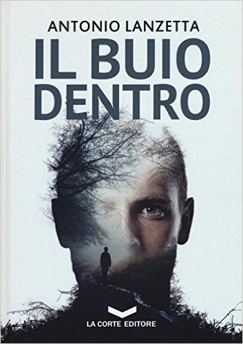

1) Da “Warrior” a “Revolution” a “Il buio dentro”, c'è stata una vera rivoluzione nella tua scrittura. Dalla fantascienza e dall'urban fantasy sei passato al thriller. Cosa ti ha spinto a scrivere di assassini e serial killer? Chi ti ha ispirato?
È vero, il cambio di genere potrebbe disorientare. Prima di considerarmi un autore sono soprattutto un lettore: c’è sempre stato un libro per ogni fase della mia vita, una storia che mi ha accompagnato e aiutato. Le persone vanno e vengono, ma i romanzi restano, un po’ come le canzoni, e Dieci Piccoli Indiani di Agatha Christie, per esempio, è una di quelle scoperte della adolescenza che ancora mi porto nel cuore. Da Revolution a Il Buio Dentro il mio stile è cambiato, così come la mia creatività, ma non del tutto. Ho sempre sperato di scrivere thriller e i personaggi de Il Buio Dentro mi ronzavano in testa da diversi anni, solo che non avevo abbastanza fiducia nei miei mezzi per dare loro una vita nelle pagine di un romanzo. Non che adesso mi senta più sicuro di me, ma mi sono fatto coraggio e ho deciso di rischiare, inoltre credo che i generi letterari siano un’invenzione dei librai per posizionare i volumi sugli scaffali. In realtà, non vorrei essere ricordato come un autore di un genere specifico. Io scrivo e basta, non importa se sia un thriller, un fantasy o altro… l’importante è che la storia venga fuori direttamente dalla pancia e dal cuore.
2) E' più forte l'influenza del fantasy/fantascienza (del tipo il primo genere non si scorda mai) oppure questa nuova esperienza ti è entrata dentro e continuerai a scrivere seguendo questo filone?
In tutta sincerità spero di continuare a scrivere romanzi neri. È una sfida e mi appassionano, molto di più dei libri di genere fantastico. Ho sempre pensato a Il Buio Dentro come il primo episodio di una serie di libri caratterizzati sempre dagli stessi personaggi. Una serie di storie a sé ma successive nel tempo in cui mostrare cosa accade a quei ragazzi di provincia dell’85. Voglio vedere Damiano e gli altri personaggi invecchiare, arrancare, cadere e rialzarsi. Rialzarsi sempre.
3) Hai scritto del camorrista di paese per creare due personaggi (non svelo chi sono) più cupi di quanto già non fossero con tutti i loro problemi, oppure per sottolineare il problema della loro presenza e la loro dipartita grazie a dei cittadini coraggiosi e stufi?
La terra in cui è ambientato il romanzo è la provincia salernitana degli anni Ottanta. Sono anni difficili, successivi al terremoto e l’infiltrazione camorristica nel tessuto sociale inizia a diventare forte, anche nel remoto Cilento. L’interazione dei miei personaggi con i delinquenti è inevitabile ma è anche uno strumento per far conoscere al lettore la mia idea di giustizia.
4) Hai dovuto fare molte ricerche o studi per calarti nella parte del criminologo/psicologo/profiler che entra nella testa di un serial killer e ne descrive le azioni?
La parte più interessante nello scrivere un romanzo è tutto ciò che viene prima della stesura. Ho letto testi di criminologia, non tanto per comprendere le dinamiche di un’indagine o per rendere credibili i dialoghi, ma soprattutto per entrare nella testa del mio serial killer, l’Uomo del Salice. Per rendere il personaggio il più originale e reale possibile dovevo comprendere le motivazioni che lo spingessero ad agire. Scendere a fondo nella sua psiche e renderla mia: io dovevo essere lui. Spero di esserci riuscito.
5) Damiano può essere considerato un eroe moderno che nonostante le cicatrici riportate da mille battaglie riesce finalmente a sconfiggere l'ombra che l'ha segnato per tutta la vita?
Damiano è una persona comune, un uomo spezzato che decide di non arrendersi al passato. Le cicatrici che si porta addosso sono qualcosa di reale e non solo fisico, sembrano dotate di una propria coscienza e gli corrodono l’anima. Il dolore che esse gli causano lo mantiene in vita, lo spinge ad andare avanti. Ci riuscirà a sconfiggere l’ombra che lo bracca da quella maledetta estate del 1985? Vedremo.
6) Ha mai letto un autore di thriller del Nord Europa?
Ho letto diversi romanzi di autori del Nord. Da Jo Nesbo a Lars Kepler, e tutti mi hanno lasciato qualcosa, ma se proprio devo fare il nome dell’autore che mi colpito per lo stile e le tematiche trattate, allora devo dire che Wulf Dorn è uno dei miei preferiti. Ho amato tutti i suoi libri e sono felice di moderare la presentazione del suo ultimo lavoro, Incubo, il 18 dicembre al Freadom di Bellizzi (Salerno).
Antonio Lanzetta
Intervista a cura di Marianna Di Felice
Di Antonio Lanzetta su Thrillernord:
 IL LIBRO - Il corpo di una ragazza viene ritrovato appeso ai rami di un albero.
Il filo spinato scava nei polsi e nella corteccia di un vecchio salice bianco.
Le hanno tagliato la testa e l’hanno lasciata sul terreno solcato dalle radici, gli occhi vuoti ora fissano quelli di Damiano Valente.
Lui è lo Sciacallo, un famoso scrittore specializzato nel ricostruire i casi di cronaca nera nelle pagine dei suoi libri...